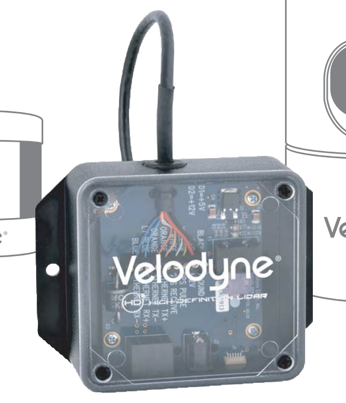
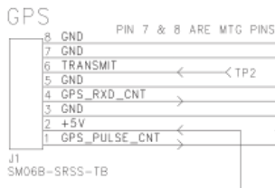

Puck系列LiDAR (和HDL32)安装指南


本指南介绍了Puck（VLP16），Puck LITE，Puck High-Res，Ultra Puck（VLP-32c）和HDL32的安装流程。 您可以通过包中包含的接口盒连接到LiDAR。
由于接口盒最初是与HDL32产品系列一起引入的，因此本安装指南也适用于HDL32激光雷达。
安装
Puck系列LiDAR需要定制结构才能安装在车辆顶部。该结构必须能为LiDAR系统提供刚性支撑。如果系统中仅使用一个LiDAR，则安装座需要将LiDAR升高到一定高度，以避免激光束被车身阻挡。如果要安装多个LiDAR，安装结构需要提供合适的LiDAR配置，包括系统要求的LiDAR定位和倾斜。在决定安装激光雷达时，请在各个激光雷达手册中找到每个激光束的详细倾斜角度。 或者您也可以咨询Apollo工程师，了解我们已成功使用和测试的配置。
布线
连接电源
LiDAR可使用带有PJ-102A连接器的AC/DC适配器作为供电的电源。 您可以直接使用它或使用自己的电源线连接电源。
连接IPC
使用电缆束中提供的以太网电缆将接口盒连接到IPC。
连接GPS
PUCK系列中的LiDAR需要建议的最小特定GPS/传输数据（GPRMC）和每秒脉冲（PPS）信号才能与GPS时间同步。需要定制连接以建立GPS接收器和LiDAR之间的通信。有关如何输出这些信号的信息，请阅读GPS手册。
在接口盒上，GPS信号通过GPS端口(SM06B-SRSS-TB)作为输入发送到LiDAR。详细的引脚排列如下图所示。GPRMC信号应发送到 GPS_RXD_CNT(引脚4)，而PPS脉冲串应发送到 GPS_PULSE_CNT。两个信号的接地应短路并发送到 GND引脚之一。

Configuration
默认情况下，LiDAR的网络IP地址为192.168.0.201。 但是，在设置Apollo时，可能需要将IP地址更改为 192.168.20.14。
接通Lidar电源，并将其连接到电脑。
配置电脑IP地址，使其于LiDAR在同一网络。
打开Web浏览器并连接到LiDAR的IP地址。 网页应显示在浏览器中。
在此网页上配置IP地址、主机、网关、端口号。 单击相应条目更改设置。
设置完成后，单击 save config。 然后，重新启动LiDAR。
[可选] 再次配置笔记本电脑以连接到LiDAR（如果IP已更改）以确认更改已生效。
[可选] 安装VLP-16进行地图绘制
在Apollo 2.5中，地图创建服务已经可用。要获取地图创建所需的数据，您需要在车辆上安装额外的VLP-16 LiDAR。该LiDAR的目的是收集HDL-64 S3 LiDAR FOV之上的物体的点云信息，例如交通信号灯和标志。它需要一个定制的机架将VLP-16 LiDAR安装在车辆顶部。下图显示了一种可能的配置。

在这种特定配置中，VLP-16 LiDAR的安装向上倾斜20±2°。VLP-16的电源线连接到DataSpeed电源面板。以太网连接连接到IPC（可能通过以太网交换机）。与HDL-64E S3 LiDAR类似，VLP-16的GPRMC和PPS接收来自同一GPS接收器的输入。理想情况下，应安装额外的硬件以复制来自GPS接收器的GPRMC和PPS信号，并分别发送到HDL-64和VLP-16。然而，简单的Y型分裂电缆也可以为两个LiDAR提供足够的信号。为帮助区分HDL-64 S3 LiDAR，请按照VLP-16手册并使用网页界面将VLP-16的IP配置为 192.168.20.14，其数据端口为 2369，和它的遥测端口 8309。如果您需要定制电缆，也可以在手册中找到GPS接收器输入信号的引脚分配。请将VLP-16连接到与HDL-64E相同的网络，并配置以太网交换机进行端口转发。
参考资料
更多信息请参考:
VLP - 16: http://velodynelidar.com/vlp-16.html
VLP - 32: http://velodynelidar.com/vlp-32c.html
VLP - 16 Hi-Res: http://velodynelidar.com/vlp-16-hi-res.html
VLP - 16 Lite: http://velodynelidar.com/vlp-16-lite.html
HDL - 32E: http://velodynelidar.com/hdl-32e.html
免责声明
该设备由Apollo硬件开发平台提供指